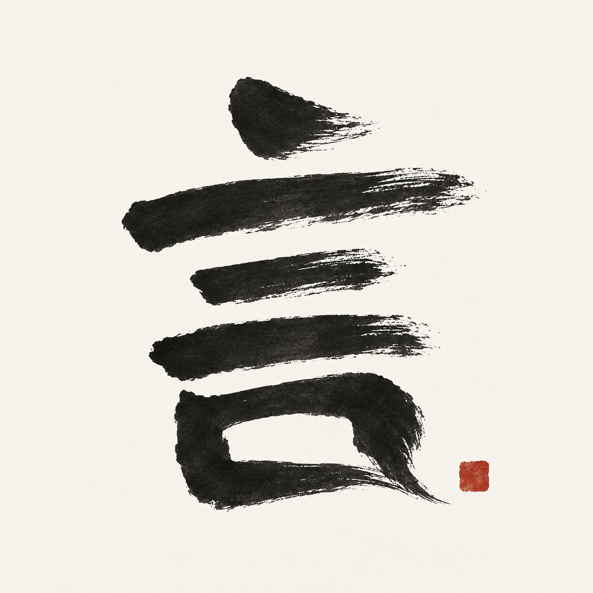

YANMO
言语之间，自有笔墨。
一 · 语音输入
在任意输入框按下快捷键，说完再按一次，正文写进当时的光标处。
口述
落笔
二 · 本机离线
默认不上传录音、正文与上下文；模型准备好之后，断网也照常落笔。
识别正文，判断语种
本地就绪中文、英文双路复核
本地就绪结合上下文保守纠错
本地就绪三 · 翻译
口述翻译直接写入，划词翻译另开宣纸窗口；英语、简体中文、日语、德语。
周五之前，把发布说明整理好。
英语Have the release notes ready by Friday.
日语金曜日までにリリースノートをまとめておいてください。
德语Bereite die Release Notes bis Freitag vor.
四 · 书案
累计落笔
平均口述速度
活跃天数
示意数据
开口有声，落笔成文。
本地语音输入 · Apple Silicon Mac · macOS 14+